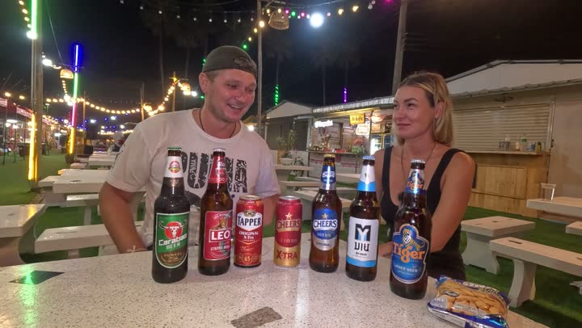

Атлас мест · Паттайя, Таиланд
Севен Элевен (7-Eleven Pattaya)

Наш отзыв
В 7-Eleven в Паттайе мы нашли разнообразие местных продуктов и напитков. Попробовали разное тайское пиво, включая Changs и Leos, некоторые понравились больше других. Также обнаружили необычные вкусности и даже ингредиенты для приготовления борща. Магазин оказался удобным местом для покупки всего необходимого.
Последний раз были здесь: 26 августа 2026
Цены на 2024 год — на момент съёмки
- орешки — 39 бат
- уксус — неизвестная цена
Где это
12.919815399999997,100.88995129999999
Смотреть в наших роликах
Пробуем пиво из 7-Eleven | Тайское пиво, дегустация, цена | Часть 1 | ПАТТАЙЯ 2024
28 января 2024 · место с 0:00 · все места ролика
7 ELEVEN с РОБОТОМ ОБЗОР | ПРОБУЕМ ВКУСНЯШКИ | ПАТТАЙЯ 2024
28 февраля 2024 · место с 0:00 · все места ролика
Готовлю БОРЩ и ОГУРЧИКИ в ТАИЛАНДЕ | Рынок РАТАНАКОР | ПАТТАЙЯ 2024
22 апреля 2024 · место с 13:52 · все места ролика
ПРОБУЕМ ВКУСНЯШКИ из Seven Eleven | небольшой обзор магазина, ЦЕНЫ | Паттайя 2024
12 мая 2024 · место с 0:00 · все места ролика
Дегустация ТАЙСКОГО пива из Seven Eleven, часть 2 | ПАТТАЙЯ 2024
16 мая 2024 · место с 0:00 · все места ролика
Дегустация ТАЙСКОГО пива из Seven Eleven, часть 3 | ПАТТАЙЯ 2024
31 мая 2024 · место с 0:00 · все места ролика
отель ГРИН ПАРК | Green Park Resort | Плюсы и Минусы | ПАТТАЙЯ
25 апреля 2025 · место с 15:01 · все места ролика
Весь остров Ко Самет за 2 дня | Лучшая экскурсия из Паттайи
19 декабря 2025 · место с 33:19 · все места ролика
Битва отелей ПРАТАМНАК: Hill Fresco vs Lewit Hotel + роскошный ужин на озере лотосов | THE COVE PUB
23 января 2026 · место с 11:56 · все места ролика
ЧЕМОДАН ЕЛЕ ЗАКРЫЛСЯ 😱 ЧТО Я ПРИВЕЗЛА ИЗ ТАИЛАНДА? 🇹🇭
26 августа 2026 · место с 8:13 · все места ролика
Рядом из нашего атласа
- Байк-шоп (шлемы) — 330 м
- Мама Паста (Mama Pasta) — 332 м
- Заправка в Паттайе (Gas Station in Pattaya) — 708 м
- Бигси — 718 м
- Супермаркет ГО Холсейл (GO Wholesale Pattaya) — 721 м
- Фруктовая ферма (Fruit Farm in Thailand) — 910 м
Атлас мест канала «Юля и Дима / БЕЗ ТОРМОЗОВ». Описания составлены по нашим роликам; цены — на момент съёмки. Нашли неточность — напишите нам в Telegram.